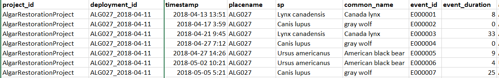

Chapter 6 Analysis data creation
6.1 Common analysis data formats
Although the types of analysis you can perform on camera trap data vary markedly, they often depend on three key dataframe structures. We introduce these structures here, then show you how to apply them in subsequent chapters.
6.2 Independent detections
The independent detections dataframe is the work horse of the vast majority of camera trap analyses, it is from this that you build the rest of your data frames. The threshold we use for determining what is an “independent detection” is typically 30 minutes… because camera trappers are creatures of habit! If you want to dig a little deeper it to the why, there is a nice summary in Rahel Sollmans “A gentle introduction to camera‐trap data analysis”:
Researchers have used different thresholds, typically 30 min (e.g., O’Brien, Kinnaird, & Wibisono, 2003) to an hour (Bahaa‐el‐din et al., 2016); some researchers have argued that multiple pictures within the same day may not represent independent detections (Royle, Nichols, Karanth, & Gopalaswamy, 2009). In most cases, this threshold is determined subjectively, based on the best available knowledge of the species under study. But it can also be determined based on the temporal autocorrelation (Kays & Parsons, 2014) or analysis of time intervals (Yasuda, 2004) of subsequent pictures.
Independent data has a single row for each independent event:

6.3 Effort look-up
Image data without effort data is worthless!
There are lots of instances where you need to know which stations were operating on a given day.
Some people like to store this information in a site x date matrix, but they are actually not that easy to data wrangle with.
A long data frame with a site and date column is the most flexible (and keeps the dates in their native POSIX formats).
Effort lookups have a single row for ever day a given location has an active camera:

6.4 Observations by time interval
We saved the most useful data format until last!
A site, time interval, effort, and species detection dataframe integrates the independent data and daily lookup described above. You can use it to create detection rates, occupancy data frames and much more (see the subsequent chapters)!
We export yearly, monthly, weekly and daily data frames from our single site exploration script - which should cover you for much of what you want to do.
We include two different types of response terms:
- Observations = the number of independent detections per time interval
- Counts = sum of the independent minimum group sizes per time interval
Example of an observation by time matrix:

Let’s build these data frames from our example_data!
6.5 Our data
First, lets create the folder to store our data!
dir.create("data/processed_data")This section will follow the following steps:
Filter to our target species
Create a camera activity look-up
Determine our “independent detections”
Create our analysis data frames
6.5.1 Filter to target species
# Remove observations without animals detected, where we don't know the species, and non-mammals
img_sub <- img %>% filter(is_blank==0, # Remove the blanks
is.na(img$species)==FALSE, # Remove classifications which don't have species
class=="Mammalia", # Subset to mammals
species!="sapiens") # Subset to anything that isn't humanThis has resulted in the removal of 33.2% of the observations.
Which are composed of the following species:
img_sub %>% group_by(common_name) %>% summarize(n())## # A tibble: 14 × 2
## common_name `n()`
## <chr> <int>
## 1 american black bear 1331
## 2 american marten 41
## 3 american red squirrel 34
## 4 canada lynx 140
## 5 caribou 787
## 6 coyote 21
## 7 elk 6
## 8 gray wolf 352
## 9 moose 2038
## 10 northern american river otter 2
## 11 rabbit 9
## 12 red fox 39
## 13 snowshoe hare 629
## 14 white-tailed deer 47906.5.2 Create a daily camera activity lookup
Next we create the daily camera activity look up (remember, one row for every day a camera is active).
# Remove any deployments without end dates
tmp <- dep[is.na(dep$end_date)==F,]
# Create an empty list to store our days
daily_lookup <- list()
# Loop through the deployment dataframe and create a row for every day the camera is active
for(i in 1:nrow(tmp))
{
if(ymd(tmp$start_date[i])!=ymd(tmp$end_date[i]))
{
daily_lookup[[i]] <- data.frame("date"=seq(ymd(tmp$start_date[i]), ymd(tmp$end_date[i]), by="days"), "placename"=tmp$placename[i])
}
}
# Merge the lists into a dataframe
row_lookup <- bind_rows(daily_lookup)
# Remove duplicates - when start and end days are the same for successive deployments
row_lookup <- row_lookup[duplicated(row_lookup)==F,]6.5.3 Determine ‘independent’ camera detections
We rarely analyse raw camera data, rather we filter out multiple detections of the same individual within a given event. This is called creating and “independent detections” dataframe.
As stated above, it is wise to think about what you are analyzing and whether such a threshold is appropriate. For example, if your organism of interest is very abundant, for examples human hikers on a busy trail, then using a 30 minute threshold may mean that multiple independent groups of hikers are rolled into a single, huge, “event”.
# Set the "independence" interval in minutes
independent <- 30Finally we need to specify what a “count” means in this dataset. Some people do estimates of group_size in their footage - summing all of the individuals they are sure are different. Others only sum the animals they can see in each photo. Here is where you specify which to use:
# Check for a `group_size` variable?
table(img_sub$group_size)##
## 1 2 3 4 5 6
## 7923 1637 597 28 24 10# Check for a 'number_ofobjects' variable
table(img_sub$number_of_objects)##
## 1 2 3
## 9772 412 35Make your selection:
# If yes use that, if no use 'number_of_objects'
img_sub$animal_count <- img_sub$group_size We will now break down the algorithm into subsections to make it clear what is occurring:
- Order the dataframe by deployment code and species
img_tmp <- img_sub %>%
arrange(deployment_id) %>% # Order by deployment_id
group_by(deployment_id, sp) %>% # Group species together
mutate(duration = int_length(timestamp %--% lag(timestamp))) # Calculate the gap between successive detections- Determine independence of images
If subsequent detections occur outside of the independence threshold, assign it a unique ID code.
library(stringr)
# Give a random value to all cells
img_tmp$event_id <- 9999
# Create a counter
counter <- 1
# Make a unique code that has one more zero than rows in your dataframe
num_code <- as.numeric(paste0(nrow(img_sub),0))
# Loop through img_tmp - if gap is greater than the threshold -> give it a new event ID
for (i in 2:nrow(img_tmp)) {
img_tmp$event_id[i-1] <- paste0("E", str_pad(counter, nchar(num_code), pad = "0"))
if(is.na(img_tmp$duration[i]) | abs(img_tmp$duration[i]) > (independent * 60))
{
counter <- counter + 1
}
}
# Update the information for the last row - the loop above always updates the previous row... leaving the last row unchanged
# group ID for the last row
if(img_tmp$duration[nrow(img_tmp)] < (independent * 60)|
is.na(img_tmp$duration[nrow(img_tmp)])){
img_tmp$event_id[nrow(img_tmp)] <- img_tmp$event_id[nrow(img_tmp)-1]
} else{
counter <- counter + 1
img_tmp$event_id[nrow(img_tmp)] <- paste0("E", str_pad(counter, nchar(num_code), pad = "0"))
}
# remove the duration column
img_tmp$duration <- NULL6.5.4 Add additional data
We could stop there, however there is other information we might light to extract about each individual event:
- the maximum number objects detected in an event
- how long the event lasts
- how many images are in each event
# find out the last and the first of the time in the group
top <- img_tmp %>% group_by(event_id) %>% top_n(1,timestamp) %>% dplyr::select(event_id, timestamp)
bot <- img_tmp %>% group_by(event_id) %>% top_n(-1,timestamp) %>% dplyr::select(event_id, timestamp)
names(bot)[2] <- c("timestamp_end")
img_num <- img_tmp %>% group_by(event_id) %>% summarise(event_observations=n()) # number of images in the event
event_grp <- img_tmp %>% group_by(event_id) %>% summarise(event_groupsize=max(animal_count))
# calculate the duration and add the other elements
diff <- top %>% left_join(bot, by="event_id") %>%
mutate(event_duration=abs(int_length(timestamp %--% timestamp_end))) %>%
left_join(event_grp, by="event_id")%>%
left_join(img_num, by="event_id")
# Remove columns you don't need
diff$timestamp <-NULL
diff$timestamp_end <-NULL
# Merge the img_tmp with the event data
img_tmp <- img_tmp %>%
left_join(diff,by="event_id")Finally lets subset to the first row of each event to create our independent dataframe!
# Remove duplicates
ind_dat <- img_tmp[duplicated(img_tmp$event_id)==F,]Next we remove any detections which occur outside of our known camera activity periods:
# Make a unique code for ever day and deployment where cameras were functioning
tmp <- paste(row_lookup$date, row_lookup$placename)
#Subset ind_dat to data that matches the unique codes
ind_dat <- ind_dat[paste(substr(ind_dat$timestamp,1,10), ind_dat$placename) %in% tmp, ]As a final step, we make the species column a ‘factor’ - this makes all the data frame building operations much simpler:
ind_dat$sp <- as.factor(ind_dat$sp)And we are ready to build our dataframes!
6.6 Creating analysis dataframes
Finally, this script outputs 11 useful data frames for future data analysis:
1. A data frame of “independent detections” at the 30 minute threshold you specified at the start:
- “data/processed_data/AlgarRestorationProject_30min_Independent.csv”
write.csv(ind_dat, paste0("data/processed_data/",ind_dat$project_id[1], "_",independent ,"min_independent_detections.csv"), row.names = F)
# also write the cleaned all detections file (some activity analyses require it)
write.csv(img_tmp, paste0("data/processed_data/",ind_dat$project_id[1], "_raw_detections.csv"), row.names = F)2. The “daily_lookup” which is a dataframe of all days a given camera station was active. Some people use an lookup matrix for this step, but we find the long format is much easier to use in downstream analysis. - “data/processed_data/_daily_deport_lookup.csv”
write.csv(row_lookup, paste0("data/processed_data/",ind_dat$project_id[1], "_daily_lookup.csv"), row.names = F)3. Unique camera locations list:
When we start to build the covariates for data analysis, it is very useful to have a list of your final project’s camera locations. We create this below in a simplified form. You can include any columns which will be use for data analysis, and export it.
#Subset the columns
tmp <- dep[, c("project_id", "placename", "longitude", "latitude", "feature_type")]
# Remove duplicated rows
tmp<- tmp[duplicated(tmp)==F,]
# write the file
write.csv(tmp, paste0("data/processed_data/",ind_dat$project_id[1], "_camera_locations.csv"), row.names = F)4. Final species list
We also want to create a final species list. We subset the data to just those included in the independent data, and then save the file.
tmp <- sp_list[sp_list$sp %in% ind_dat$sp,]
# Remove the 'verified' column
tmp$verified <- NULL
# We will replace the spaces in the species names with dots, this will make things easier for us later (as column headings with spaces in are annoying).
library(stringr)
tmp$sp <- str_replace(tmp$sp, " ", ".")
write.csv(tmp, paste0("data/processed_data/",ind_dat$project_id[1], "_species_list.csv"), row.names = F)5 & 6: A ‘site x species’ matrix of the number of independent detections and species counts across the full study period:
“data/processed_data/AlgarRestorationProject_30min_Independent_total_observations.csv”
“data/processed_data/AlgarRestorationProject_30min_Independent_total_counts.csv”
# Total counts
# Station / Month / deport / Species
tmp <- row_lookup
# Calculate the number of days at each site
total_obs <- tmp %>%
group_by(placename) %>%
summarise(days = n())
# Convert to a data frame
total_obs <- as.data.frame(total_obs)
# Add columns for each species
total_obs[, levels(ind_dat$sp)] <- NA
# Duplicate for counts
total_count <- total_obs
# Test counter
i <-1
# For each station, count the number of individuals/observations
for(i in 1:nrow(total_obs))
{
tmp <- ind_dat[ind_dat$placename==total_obs$placename[i],]
tmp_stats <- tmp %>% group_by(sp, .drop=F) %>% summarise(obs=n(), count=sum(animal_count))
total_obs[i,as.character(tmp_stats$sp)] <- tmp_stats$obs
total_count[i,as.character(tmp_stats$sp)] <- tmp_stats$count
}
# Save them
write.csv(total_obs, paste0("data/processed_data/",ind_dat$project_id[1], "_",independent ,"min_independent_total_observations.csv"), row.names = F)
write.csv(total_count, paste0("data/processed_data/",ind_dat$project_id[1], "_",independent ,"min_independent_total_counts.csv"), row.names = F) 7 & 8: A ‘site_month x species’ matrix of the number of independent detections and species counts across for each month in the study period:
“data/processed_data/AlgarRestorationProject_30min_Monthly_total_observations.csv”
“data/processed_data/AlgarRestorationProject_30min_Monthly_total_counts.csv”
# Monthly counts
# Station / Month / days / Covariates / Species
tmp <- row_lookup
# Simplify the date to monthly
tmp$date <- substr(tmp$date,1,7)
# Calculate the number of days in each month
mon_obs <- tmp %>%
group_by(placename,date ) %>%
summarise(days = n())
# Convert to a data frame
mon_obs <- as.data.frame(mon_obs)
mon_obs[, levels(ind_dat$sp)] <- NA
mon_count <- mon_obs
# For each month, count the number of individuals/observations
for(i in 1:nrow(mon_obs))
{
tmp <- ind_dat[ind_dat$placename==mon_obs$placename[i] & substr(ind_dat$timestamp,1,7)== mon_obs$date[i],]
tmp_stats <- tmp %>% group_by(sp, .drop=F) %>% summarise(obs=n(), count=sum(animal_count))
mon_obs[i,as.character(tmp_stats$sp)] <- tmp_stats$obs
mon_count[i,as.character(tmp_stats$sp)] <- tmp_stats$count
}
write.csv(mon_obs, paste0("data/processed_data/",ind_dat$project_id[1], "_",independent ,"min_independent_monthly_observations.csv"), row.names = F)
write.csv(mon_count, paste0("data/processed_data/",ind_dat$project_id[1], "_",independent ,"min_independent_monthly_counts.csv"), row.names = F) 9 & 10: A ‘site_week x species’ matrix of the number of independent detections and species counts across for each week in the study period:
“data/processed_data/AlgarRestorationProject_30min_Weekly_total_observations.csv”
“data/processed_data/AlgarRestorationProject_30min_Weekly_total_counts.csv”
# Weekly format
# Station / Month / days / Covariates / Species
tmp <- row_lookup
# Simplify the date to year-week
tmp$date <- strftime(tmp$date, format = "%Y-W%U")
# The way this is coded is the counter W01 starts at the first Sunday of the year, everything before that is W00. Weeks do not roll across years.
# Calculate the number of days in each week
week_obs <- tmp %>%
group_by(placename,date ) %>%
summarise(days = n())
# Convert to a data frame
week_obs <- as.data.frame(week_obs)
# Add species columns
week_obs[, levels(ind_dat$sp)] <- NA
# Duplicate for counts
week_count <- week_obs
# For each week, count the number of individuals/observations
for(i in 1:nrow(week_obs))
{
tmp <- ind_dat[ind_dat$placename==week_obs$placename[i] & strftime(ind_dat$timestamp, format = "%Y-W%U")== week_obs$date[i],]
tmp_stats <- tmp %>% group_by(sp, .drop=F) %>% summarise(obs=n(), count=sum(animal_count))
week_obs[i,as.character(tmp_stats$sp)] <- tmp_stats$obs
week_count[i,as.character(tmp_stats$sp)] <- tmp_stats$count
}
write.csv(week_obs, paste0("data/processed_data/",ind_dat$project_id[1], "_",independent ,"min_independent_weekly_observations.csv"), row.names = F)
write.csv(week_count, paste0("data/processed_data/",ind_dat$project_id[1], "_",independent ,"min_independent_weekly_counts.csv"), row.names = F) 11 & 12: A ‘site_day x species’ matrix of the number of independent detections and species counts across for each day a station was active in the study period:
“data/processed_data/AlgarRestorationProject_30min_Daily_total_observations.csv”
“data/processed_data/AlgarRestorationProject_30min_Daily_total_counts.csv”
# Daily format
# Station / Month / days / Covariates / Species
tmp <- row_lookup
tmp$days <- 1
# Add species columns
tmp[, levels(ind_dat$sp)] <- NA
day_obs <- tmp
day_count <- tmp
# For each week, count the number of individuals/observations
for(i in 1:nrow(day_obs))
{
tmp <- ind_dat[ind_dat$placename==day_obs$placename[i] & strftime(ind_dat$timestamp, format = "%Y-%m-%d")== day_obs$date[i],]
tmp_stats <- tmp %>% group_by(sp, .drop=F) %>% summarise(obs=n(), count=sum(animal_count))
day_obs[i,as.character(tmp_stats$sp)] <- tmp_stats$obs
day_count[i,as.character(tmp_stats$sp)] <- tmp_stats$count
}
write.csv(day_obs, paste0("data/processed_data/",ind_dat$project_id[1], "_",independent ,"min_independent_daily_observations.csv"), row.names = F)
write.csv(day_count, paste0("data/processed_data/",ind_dat$project_id[1], "_",independent ,"min_independent_daily_counts.csv"), row.names = F) 6.6.1 Final data check
Finally, as a last check that our code is creating robust analysis data frames, we check if the observations/counts are the same across each temporal scale (total/monthly/weekly/daily). Check this using the following tables.
Observations
tmp <- cbind(data.frame("Time"=c("Total", "Monthly", "Weekly", "Daily")),
rbind(colSums(total_obs[,2:ncol(total_obs)]),
colSums(mon_obs[,3:ncol(mon_obs)]),
colSums(week_obs[,3:ncol(week_obs)]),
colSums(day_obs[,3:ncol(day_obs)]) ))
tmp %>%
kbl() %>%
kable_styling(full_width = T) %>%
column_spec(1, bold = T, border_right = T)%>%
kableExtra::scroll_box(width = "100%")| Time | days | Alces alces | Canis latrans | Canis lupus | Cervus canadensis | Lepus americanus | Lontra canadensis | Lynx canadensis | Martes americana | Odocoileus virginianus | Oryctolagus cuniculus | Rangifer tarandus | Tamiasciurus hudsonicus | Ursus americanus | Vulpes vulpes |
|---|---|---|---|---|---|---|---|---|---|---|---|---|---|---|---|
| Total | 20350 | 176 | 8 | 93 | 1 | 241 | 1 | 52 | 24 | 562 | 2 | 119 | 26 | 228 | 10 |
| Monthly | 20350 | 176 | 8 | 93 | 1 | 241 | 1 | 52 | 24 | 562 | 2 | 119 | 26 | 228 | 10 |
| Weekly | 20350 | 176 | 8 | 93 | 1 | 241 | 1 | 52 | 24 | 562 | 2 | 119 | 26 | 228 | 10 |
| Daily | 20350 | 176 | 8 | 93 | 1 | 241 | 1 | 52 | 24 | 562 | 2 | 119 | 26 | 228 | 10 |
Counts
tmp <- cbind(data.frame("Time"=c("Total", "Monthly", "Weekly", "Daily")),
rbind(colSums(total_count[,2:ncol(total_count)]),
colSums(mon_count[,3:ncol(mon_count)]),
colSums(week_count[,3:ncol(week_count)]),
colSums(day_count[,3:ncol(day_count)]) ))
tmp %>%
kbl() %>%
kable_styling(full_width = T) %>%
column_spec(1, bold = T, border_right = T)%>%
kableExtra::scroll_box(width = "100%")| Time | days | Alces alces | Canis latrans | Canis lupus | Cervus canadensis | Lepus americanus | Lontra canadensis | Lynx canadensis | Martes americana | Odocoileus virginianus | Oryctolagus cuniculus | Rangifer tarandus | Tamiasciurus hudsonicus | Ursus americanus | Vulpes vulpes |
|---|---|---|---|---|---|---|---|---|---|---|---|---|---|---|---|
| Total | 20350 | 227 | 8 | 133 | 1 | 244 | 1 | 53 | 24 | 678 | 2 | 159 | 26 | 256 | 10 |
| Monthly | 20350 | 227 | 8 | 133 | 1 | 244 | 1 | 53 | 24 | 678 | 2 | 159 | 26 | 256 | 10 |
| Weekly | 20350 | 227 | 8 | 133 | 1 | 244 | 1 | 53 | 24 | 678 | 2 | 159 | 26 | 256 | 10 |
| Daily | 20350 | 227 | 8 | 133 | 1 | 244 | 1 | 53 | 24 | 678 | 2 | 159 | 26 | 256 | 10 |